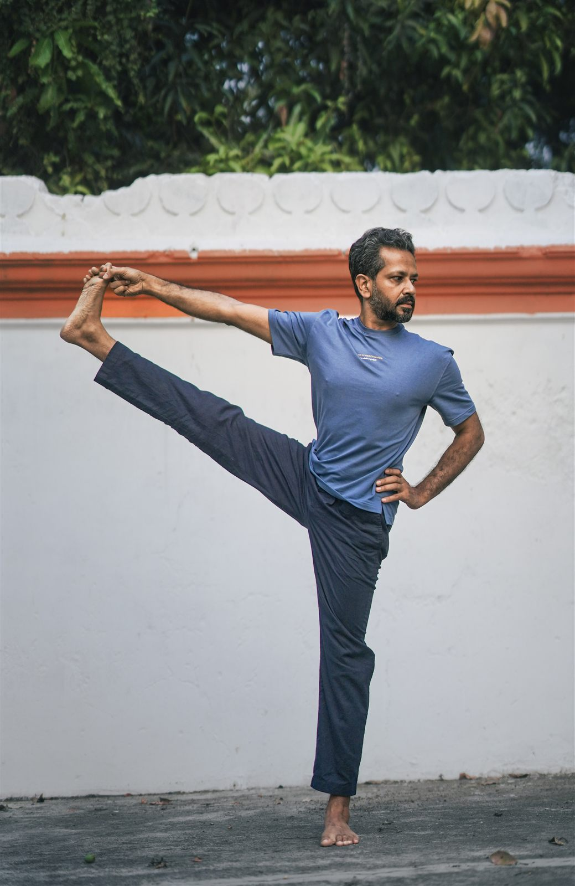
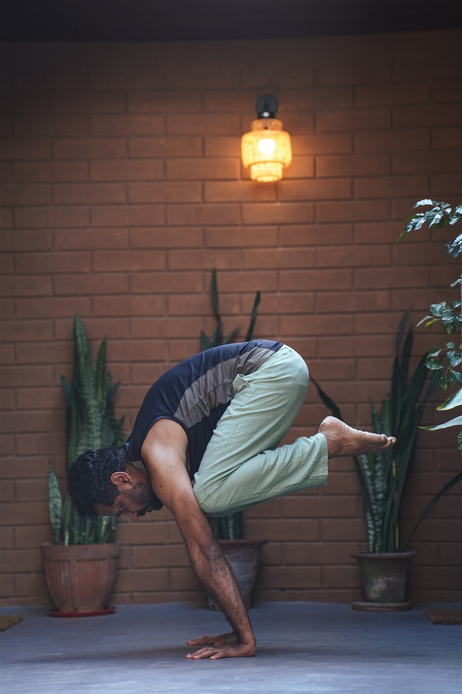

In person · Gokulam, Mysore
Ashtanga Vinyasa
Mysore Style
A traditional, self-paced method of practice with individual guidance.

DaysMonday to Friday
Time6:00–8:30 a.m. IST
LocationGokulam, Mysore
The practice
Learn at your own pace.
Students move through the sequence individually, guided through breath, posture, and gaze—the three points of attention known as Tristhana.
The practice is adapted to your current level, whether you are beginning or already established. Based on mobility, strength, and flexibility, the sequence is modified and made accessible.
Close attention is given to alignment, with hands-on adjustments and verbal guidance supporting steadiness, ease, and progression.
Over time, the practice becomes more independent: structured, consistent, and inwardly guided.
